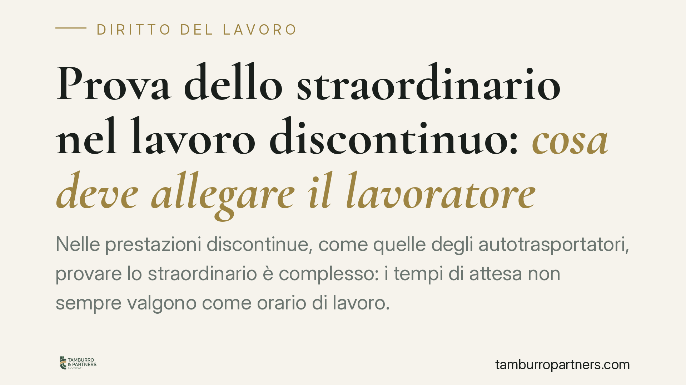

Prova dello straordinario nel lavoro discontinuo: cosa deve allegare il lavoratore
Nelle prestazioni discontinue, come quelle degli autotrasportatori, provare lo straordinario è complesso: i tempi di attesa non sempre valgono come orario di lavoro. Una recente pronuncia della Sezione Lavoro della Cassazione torna sul riparto tra ciò che il lavoratore deve allegare e ciò che il giudice qualifica. Ne derivano indicazioni concrete sulla documentazione da conservare.

Il caso
La controversia nasce dalla richiesta di un autotrasportatore di vedersi riconoscere il lavoro straordinario svolto, in un contesto di prestazione cosiddetta "discontinua": periodi di guida alternati a soste, attese di carico e scarico, fermi tecnici. Il nodo è stabilire quali di questi periodi rientrino nell'orario di lavoro e quali no.
La Corte d'Appello di Torino aveva trattato la questione; il caso è poi arrivato in Cassazione, Sezione Lavoro. Avvertenza per il revisore: gli estremi dell'ordinanza (indicata come n. 1835/2026) sono *da verificare* prima della pubblicazione a nome dello studio, anche in ragione della data. In attesa di riscontro usiamo la formula prudente "una recente pronuncia".
Lavoro effettivo, tempo "a disposizione" e riposo
Il punto di partenza è la nozione di orario di lavoro. L'art. 1 del D.Lgs. 66/2003 definisce orario di lavoro "qualsiasi periodo in cui il lavoratore sia al lavoro, a disposizione del datore e nell'esercizio della sua attività o delle sue funzioni". Il riposo è, per differenza, ogni periodo non rientrante in tale nozione.
In mezzo si collocano i tempi di attesa. Non sono riposo pieno, perché il lavoratore resta vincolato; non sono sempre lavoro effettivo, se non deve svolgere alcuna attività. La loro qualificazione dipende dall'intensità del vincolo di disponibilità.
Nell'autotrasporto il quadro è più articolato. Il Reg. (CE) 561/2006 e il D.Lgs. 234/2007 disciplinano tempi di guida, interruzioni e riposi, con il cronotachigrafo quale strumento di registrazione. Questi dati costituiscono una fonte probatoria oggettiva di primaria importanza.
Allegazione dei fatti e qualificazione giuridica
Il principio ribadito dalla pronuncia riguarda il riparto tra le parti e il giudice.
Al lavoratore spetta allegare i fatti storici della prestazione: orari di inizio e fine, attività svolte, soste, tempi di servizio e — questo è il punto da non sottovalutare — il vincolo di disponibilità cui era soggetto durante le attese. Il vincolo è un fatto, non un concetto giuridico: se il lavoratore era tenuto a restare presso il mezzo, a rispondere a chiamate, a riprendere la guida a comando, deve dedurlo e provarlo.
Al giudice spetta la qualificazione giuridica: sulla base dei fatti allegati, stabilire se un dato periodo di attesa sia tempo di lavoro, tempo "a disposizione" o riposo intermedio, e computarlo ai fini dello straordinario. Qui opera il principio *iura novit curia* (il giudice conosce il diritto): la sussunzione della fattispecie nelle categorie normative non va chiesta, ma discende dai fatti.
Il confine, dunque, non è netto come potrebbe sembrare. Il lavoratore non è esonerato dal dedurre la disponibilità; è esonerato dal qualificarla giuridicamente in modo corretto.
Implicazioni pratiche
Per il lavoratore. Un onere di allegazione impostato male pregiudica la domanda a prescindere dal merito. Non basta affermare "ho lavorato dieci ore": occorre descrivere la giornata tipo, le attese e il vincolo che le caratterizzava. I dati del cronotachigrafo e i fogli di viaggio sono spesso decisivi.
Per il datore di lavoro. La chiarezza negli ordini di servizio e nella disciplina dei tempi di attesa riduce il contenzioso. Documentare quando il dipendente è libero di disporre del proprio tempo — e quando no — è l'elemento che il giudice valuterà.
Su entrambi i fronti pesa la prescrizione. I crediti retributivi, incluso lo straordinario, si prescrivono in cinque anni ai sensi dell'art. 2948 c.c. Conservare la documentazione entro questo arco temporale è condizione per far valere o contrastare la pretesa.
Cosa fare in concreto
- Conservate i dati del cronotachigrafo e i fogli di viaggio: sono la prova oggettiva più solida dei tempi di guida e sosta.
- Documentate gli ordini di servizio e ogni comunicazione che definisca obblighi di presenza o reperibilità durante le attese.
- Allegate il vincolo di disponibilità, non solo l'orario: descrivete cosa il lavoratore era tenuto a fare o a non fare nei tempi di attesa.
- Verificate i termini di prescrizione: agite o archiviate la documentazione tenendo conto del limite quinquennale dell'art. 2948 c.c.
- Impostate correttamente la domanda giudiziale, distinguendo i fatti da allegare dalle valutazioni rimesse al giudice.
Disclaimer
Contributo informativo a cura di Tamburro & Partners - Avv. Giuseppe Tamburro. Non costituisce parere legale.
Ogni storia di lavoro ha i suoi tempi.
Se gestisci HR e vuoi un confronto su contenzioso, ispezioni o licenziamenti, scrivi allo studio. Ti rispondiamo entro un giorno lavorativo.